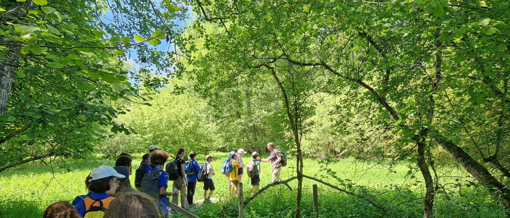

Marche de Saint à Saint-Sauveur
Malgré une météo capricieuse, cette marche entre Saint et Saint-Sauveur nous a permis de vivre une belle aventure faite de découvertes, de nature, de rencontres inattendues, de jeux et de moments chaleureux autour du feu.
La journée a commencé à 9 h. Après avoir attendu quelques retardataires, les chefs nous ont expliqué le déroulement du week-end et nous ont présenté Marie, qui pourrait peut-être postuler à un poste de cheffe chez les Oranges.
Suite à cela, nous avons commencé à marcher pour rejoindre l’EHPAD de Saint-Sauveur. En chemin, nous nous sommes arrêtés près d’un étang pour faire le temps spi. Celui-ci consistait à se rapprocher ou à s’éloigner du centre selon l’importance que nous accordions aux différentes affirmations proposées par les chefs.
Nous avons ensuite enfin pu manger et déguster nos pique-niques tout en reprenant des forces. Après le repas, nous nous sommes remis en route jusqu’à un endroit où se trouvait un parcours nature. Nous nous y sommes engagés : un petit chemin sur des passerelles serpentait entre les arbres, la végétation luxuriante et une petite rivière. Ce lieu était vraiment en harmonie avec la nature.
Après être sortis de cette promenade, nous nous sommes retrouvés nez à nez avec un cheval. Nous nous sommes un peu moqués de lui, car quelque chose dans son attitude nous a fait rire.
Nous avons également croisé un paon majestueux et éblouissant, dont les magnifiques plumes rayonnaient de mille couleurs. Comme si cela ne suffisait pas à rendre la scène mémorable, il s’est mis à faire ses besoins sur une BMW !
Après cette petite péripétie accompagnée de nombreux fous rires, nous avons repris notre route. L’eau commençait à manquer et la soif se faisait sentir. Heureusement, nous sommes finalement arrivés aux voitures.
Nous les avons prises pour rejoindre l’EHPAD, où nous avons pu boire de l’eau du robinet, ce qui nous a fait le plus grand bien après cette longue marche.
Nous avons ensuite commencé à monter les tentes et à remplir les bidons d’eau. Nous avons terminé en un rien de temps. En revanche, la tente des chefs s’est révélée bien plus compliquée à installer, car nous n’avions jamais monté ce modèle auparavant.
Une fois cette tâche achevée, nous avons transporté tout le matériel et les affaires jusqu’au pré du poney, situé en hauteur.
Nous avons ensuite été chargés du service bois. Même si ce moment a été ponctué de nombreux bavardages, nous avons tout de même réussi à rapporter une grande quantité de bois. Cela nous a permis d’allumer un grand feu qui a brûlé pendant longtemps.
Après une petite chute causée par une barrière, nous nous sommes mis à préparer le repas. Celui-ci, concocté par les gastronomes, était vraiment délicieux. Personnellement, j’en ai repris trois fois !
Une fois le repas terminé, nous avons fait la vaisselle, d’abord collectivement puis individuellement. Pendant ce temps, les alchimistes sont partis préparer la veillée. Le reste de la troupe a occupé l’attente en jouant aux Loups perchés et à l’Épervier.
Lorsqu’ils ont enfin été prêts, nous avons pu commencer la veillée, avec le feu flamboyant qui illuminait l’arrière-plan et créait une ambiance chaleureuse et conviviale.
Pour commencer la veillée, nous avons formé trois petites équipes. Chacune devait d’abord imaginer et dessiner une machine en respectant certaines contraintes imposées.
Ensuite, il fallait inventer le pouvoir de cette machine ainsi que le problème qu’elle rencontrait, puis le mimer aux autres équipes. Celles-ci devaient alors trouver une solution pour la réparer.
Après plusieurs fous rires provoqués par les mimes et les explications parfois très farfelues, nous avons pris un moment pour faire le débriefing de la journée et partager nos impressions sur ce que nous avions vécu.
Une fois ce temps d’échange terminé, nous sommes allés nous coucher. Après quelques derniers bavardages sous les tentes, nous nous sommes finalement endormis, impressionnés par cette belle journée et impatients de découvrir ce que le lendemain nous réservait.
Entre la longue marche, les rencontres inattendues, les éclats de rire, le grand feu et la veillée, cette rencontre restera un très beau souvenir pour toute la troupe.
Maud, Reporter de la troupe